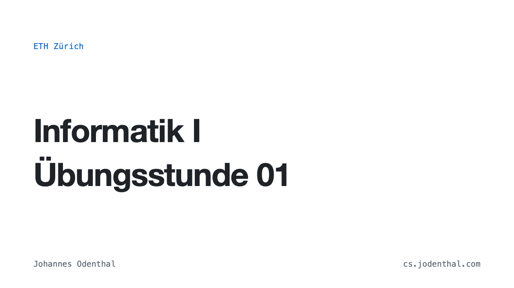
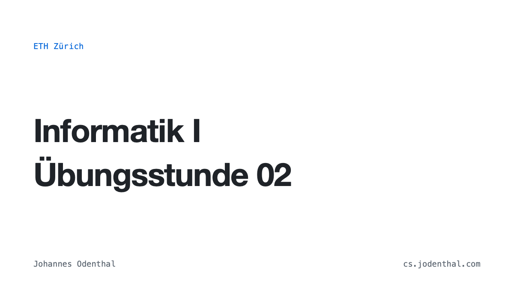
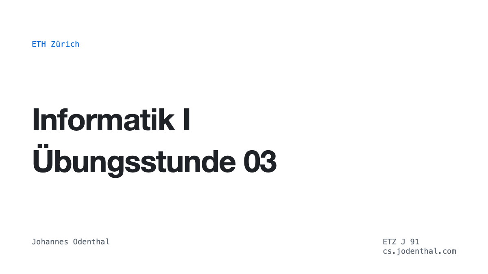
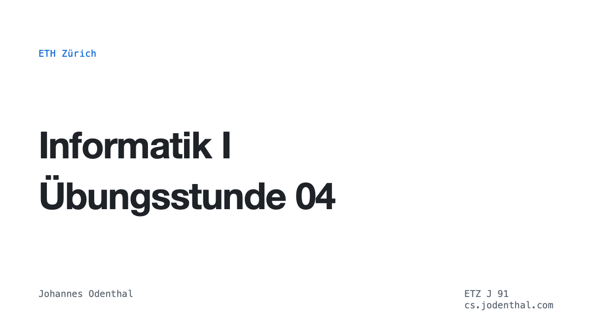
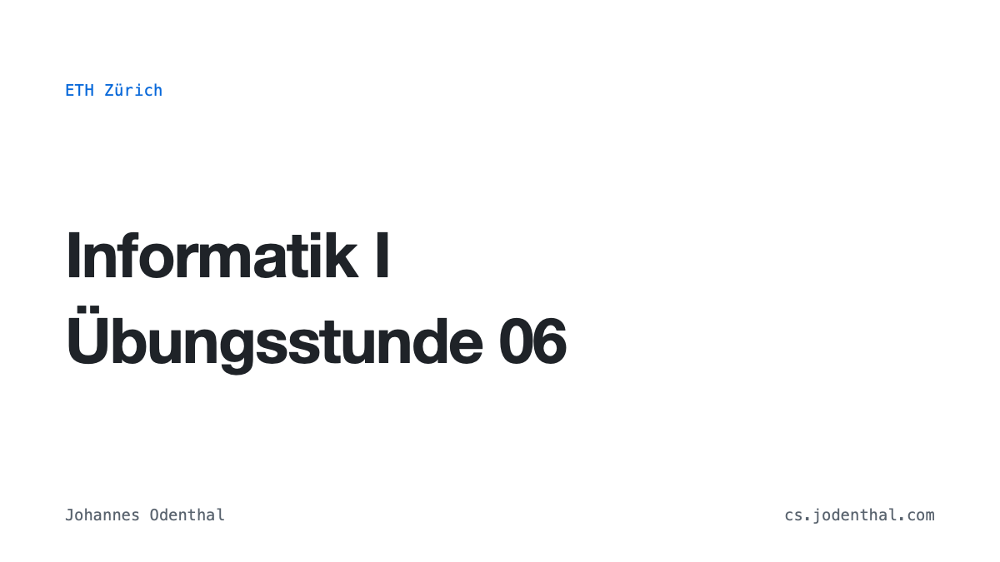

Informatik I · AS 2026
Weekly slides
Slides and topics from our weekly exercise sessions. Click a preview to open the slides.
-

Open slides ↗Week 01
- Course organisation & CodeExpert
- Code tracing
- Principles & tips
-

Open slides ↗Week 02
- Integer division & modulo
- Logical expressions
- Mixed types & increment operators
-

Open slides ↗Week 03
- For loops & debugging
- Repetition
- Floating point & comparisons
-

Open slides ↗Week 04
- Loop correctness & transformations
- Taylor series
- Scopes & shadowing
-

Open slides ↗Week 06
- References & const
- Reversing vectors
- Multidimensional vectors & transpose